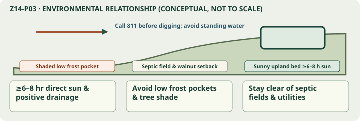

Z14-P03 · Food production and preservation · New manuscript
Select sunny, well-drained garden sites and avoid low frost pockets
Maximize crop productivity and prevent root rot and premature frost kill through smart site placement.
When it applies · Planning new backyard, community, or small-acreage food gardens.
Equipment · Sun-path observation across the day, drainage check after heavy rain, and utility/septic map.

Actions
- Locate vegetable beds where plants receive at least 6 to 8+ hours of unobstructed direct sunlight daily—fruiting crops (tomatoes, beans, squash) yield poorly in tree shade and suffer heavier fungal disease.[P01]
- Choose gently sloping or well-drained soil well away from standing storm puddles, competitive tree roots (especially black walnut trees whose juglone toxin stunts tomatoes and potatoes), septic drainfields, and low cold-air frost pockets at valley bottoms.[P01, U07]
- Call 811 ("Call Before You Dig") before deep digging or fence-post installation to avoid buried utility gas, electric, and water lines.[U14, P01]
Failure recognition · Tilling a vegetable patch directly over a backyard septic drainfield or in a shaded low swale where cold air and spring rainwater pool.[P01, U07]
Verify · Confirm ≥6–8 hours full sun, positive rain drainage, clear separation from septic/black-walnut/utilities, and safe water-tap access.[P01, U07]
Stop or change course · Standing water persisting 24+ hours after rain or buried septic lines require relocating the plot or building drained raised beds elsewhere.[P01, P02]
Evidence and editorial notes
- P01 · University of Minnesota Extension · Planting the Vegetable Garden (current web edition)
- Section: Site Selection, Sunlight, Frost Dates, and Short-Season Planning · Conditions: Home vegetable gardening in Upper Midwest / Minnesota (USDA Zones 3–5)
Support: Select a sunny well-drained garden site receiving 6–8+ hours of direct sunlight, match crop days-to-maturity to local last-spring and first-autumn frost dates, and separate cool-season crops from frost-sensitive warm-season crops.
Limitations: Microclimates, low frost pockets, and soil clay/sand composition shift local planting windows by weeks. · Conflicting evidence: None; anchors regional Minnesota growing-season realism.
Editorial note: Grounds Z14 regional food production and frost-window planning. · Specialist reviewer: Horticulture and university Extension specialist
Primary source · checked 2026-11-24 - P02 · University of Minnesota Extension · Planting the Vegetable Garden (current web edition)
- Section: Soil Preparation, Testing, Compost, and Safe Fertility · Conditions: Residential garden beds and small-acreage food plots
Support: Test garden soil through an accredited lab (e.g., UMN Soil Testing Lab) before heavy amending to determine pH, nutrients, and urban lead risk; incorporate finished compost and avoid applying raw animal manure immediately before harvesting edible crops.
Limitations: Urban soils near older painted buildings or roads may contain legacy lead requiring raised beds and clean soil barriers. · Conflicting evidence: None; links soil fertility to food-safety contamination prevention.
Editorial note: Separates safe composted soil building from pathogen/heavy-metal hazards. · Specialist reviewer: Soil science and Extension horticulture
Primary source · checked 2026-11-24 - U07 · U.S. EPA · Septic Systems: What to Do after the Flood (Current web edition)
- Section: Do I pump my tank during flooded or saturated drainfield conditions?; After the flood · Conditions: Flooded or saturated septic drainfield
Support: Conserve water and do not pump while the field is flooded or saturated. Arrange professional inspection and qualified servicing as conditions permit.
Limitations: Avoid use until local or professional directions allow. Tank buoyancy and recovery depend on site and system. · Conflicting evidence: See A02 claim audit for boundaries.
Editorial note: Grounds septic-system limits and outage water conservation in Z13. · Specialist reviewer: Onsite wastewater engineering and public health
Primary source · checked 2026-11-25 - U14 · FEMA / Ready.gov · Make a Plan (current web edition)
- Section: Household Emergency Planning, Utility Maps, and Outage Checklists · Conditions: Pre-outage residential documentation and household drills
Support: Document main water, electrical panel, and gas shutoff locations, utility outage phone numbers, medical power registries, and neighborhood check-in networks on paper before storms hit.
Limitations: Utility medical-priority lists do not guarantee uninterrupted power during major ice storms or grid blackouts. · Conflicting evidence: None; bridges Z01 planning with Z13 household infrastructure.
Editorial note: Grounds household utility mapping and vulnerable-occupant contingencies. · Specialist reviewer: Emergency management and accessibility specialist
Primary source · checked 2026-11-24
Source lineage · UMN Extension Planting the Vegetable Garden; new manuscript · Classification · New manuscript.